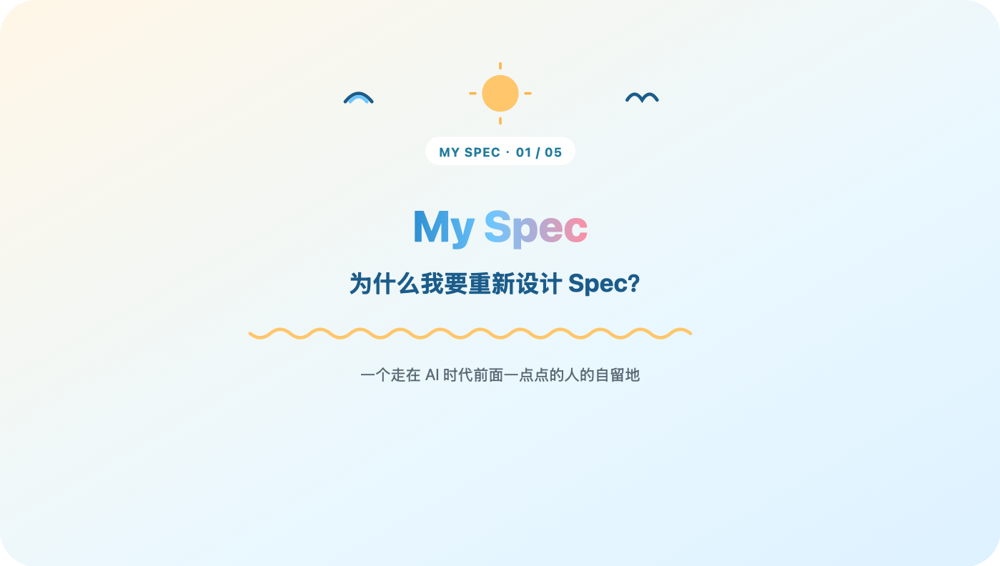
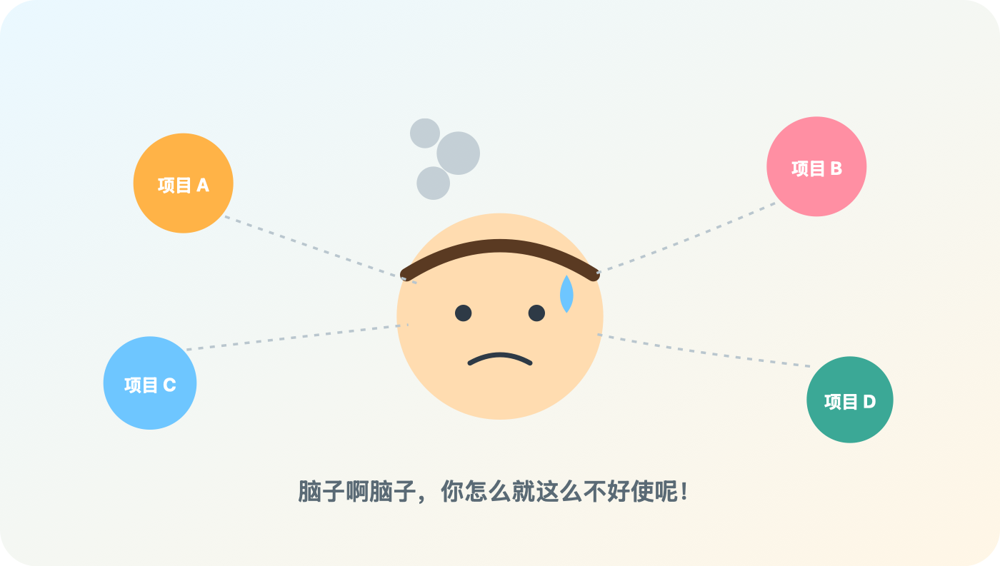

这是"My Spec"系列的第一篇。先说一句，这不是什么产品发布稿，就是我自己一边用一边改的东西，写出来给自己留个底，顺便看看有没有同路人。
现在 vibe coding 的比重是真的越来越高了， AI 写的代码也越来越多。但很搞笑的一点是，先扛不住的不是 AI ，是我——手上同时开好几个项目，脑子先宕机了。

Vibe coding 说白了有点像开盲盒，你压根不知道 AI 内部到底是怎么实现的，反正改来改去总能跑起来，改多久就先别问了。但跑起来之后呢？半年后谁还记得这段逻辑到底是怎么拼出来的？
真被坑过一次。有个功能是三周前一句话丢给 AI 生成的，当时跑得好好的。三周后产品说这块要改需求，我打开代码，愣是花了二十分钟才想起来当初为什么这么写、哪几个文件互相牵着。二十分钟不算长吧，但那可是我自己写的代码啊，按理说五秒钟就该想起来。更尴尬的是还得靠猜——猜这段逻辑是不是当年为了兼容某个边界情况才这么写，猜错了改出来的东西又得推倒重来。
或者产品又改需求了，我这原来咋设计的呢，这怎么给他兼容一下？手上还开着两三个项目，脑子在各个项目的上下文之间来回横跳，切一次大概要"预热"十几分钟，一天下来大半时间都花在"我刚才在干嘛来着"上，真正写代码的时间反倒没多少。
我猜，这大概就是 spec 这个东西冒出来的原因之一吧。
前半年断断续续聊过几次 spec 这个话题，团队开发那边基本都会想到用 openspec 来维护——说白了就是把项目的上下文按规范写成文本，存到一个固定目录里，以后 agent 不用再翻全部代码，扫一眼 spec 就能大概摸清项目现状，不用每次都从头考古。这思路我是认的，把"理解一个项目"从"翻代码"变成"读文档"，成本确实能降下来。
但 openspec 太重了。真上手用过才知道，一个小改动也得走完整套模板，目标、背景、方案、影响面、验收，一样都不能少，填不完整还容易被打回来重写。团队作战、要留痕给审计的项目，这套重可能是必要的；可对我这种经常一个人写着玩、想到哪改到哪的场景，光"填表"这一步就足够劝退了。流程一多，人就懒得维护， spec 立刻烂尾。
工具用别人的总归是不太得心应手，那就自己整一个吧。根据自己这几年的开发经验，我把 spec 拆成了三档：
| 档位 | 定位 | 适合场景 |
|---|---|---|
| 🏖️ LiteSpec | Feature Driven | 个人玩票用 |
| ⛱️ GoalSpec | Workflow Driven | 一套可复用的六步闭环，小团队用 |
| 🌊 EnterpriseSpec | Delivery Driven | 重测试重交付重审计，中大型核心项目用 |
这三档不是三选一，是跟着项目往前走自然长出来的——协作的人越多，交付到后面越不能出岔子，测试和验收自然就得跟上。
一开始我还想过做成"一套模板配几个可选字段"，填多填少自己看着办，结果试了几次不行——字段是可选的，人就会本能地全跳过，最后跟没写没区别。索性做成三档，每档该填什么定死，不留偷懒的空子。
LiteSpec 以 feature 为单位管 spec ：新功能开个 feature 分支，先写这个 feature 的 spec ，再动手写代码。内容很克制，写清楚要干嘛、为什么做、边界在哪、怎么算完成，别的不需要。默认就走这一档，能不升级就不升级，毕竟大部分时候我面对的就是"一个人、一个 feature 、赶紧上线"这种场景。
GoalSpec 是当团队开始固定走"提需求 - 拆 spec - 拆 issue - 实现 - 评审 - 交付"这套流程的时候升上去的——相当于给"随手改改"加了道"提交前先审一遍"的仪式感。
很大一部分原因，我不直接抄 openspec ，是这套体系得让我自己愿意去维护它。 spec 这东西一旦没人管就变成地狱——半吊子内容、过时说明， agent 理解出错，反而比不写 spec 还浪费时间，现在这压力谁经得起被这么坑一次？
那怎么保证它不烂尾？每一档我都配了一份 agent 清单，还打算加一套 CI 门禁，每次代码有变动就检查 spec 是不是该更新的都更新了、对不对得上。这两块后面会分两篇细说：一篇讲 agent 到底怎么分工，怎么避免我一开始踩过的"三份说明书各改各的"那个坑；一篇讲 CI 门禁具体怎么设计、我现在做到哪一步了。
会多烧点 token ，这个躲不掉。但项目要长期维护，这笔账迟早得算，毕竟出问题要背锅的时候，还得靠它抢救。
三档听起来简单，但真要划清楚什么时候该升级、什么时候不该，比想象中难多了，不知道是不是就我自己在这道坎上反复横跳。下一篇打算把这些具体的升级信号摊开来讲讲。